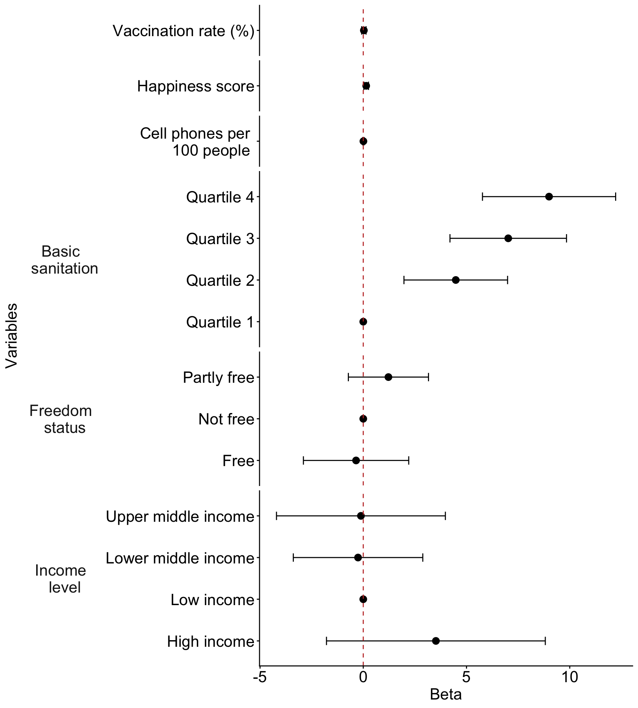

2026-03-09
Table 1 (table summary in Lesson 2)
Regression table or Forest plot
One additional figure or table to help understand your question
Interpretation(s) of important coefficient estimates
library(gtsummary)
gapm2_vars = gapm2 %>%
select(cell_phones_100,
vax_rate,
freedom_status,
income_level_4,
basic_sani,
happiness_score)
tbl_summary(
gapm2_vars,
label = list(
cell_phones_100 ~ "Cell phones per 100 people",
basic_sani ~ "Basic sanitation (%)",
freedom_status ~ "Freedom status",
income_level_4 ~ "Income level",
vax_rate ~ "Vaccination rate (%)",
happiness_score ~ "Happiness score"
),
statistic = list(all_continuous() ~ "{mean} ({sd})")
)| Characteristic | N = 1051 |
|---|---|
| Cell phones per 100 people | 117 (35) |
| Vaccination rate (%) | 91 (9) |
| Freedom status | |
| Not free | 31 (30%) |
| Partly free | 46 (44%) |
| Free | 28 (27%) |
| Income level | |
| Low income | 15 (14%) |
| Lower middle income | 37 (35%) |
| Upper middle income | 34 (32%) |
| High income | 19 (18%) |
| Basic sanitation (%) | 80 (24) |
| Happiness score | 52 (12) |
| 1 Mean (SD); n (%) | |
tbl_regression(
final_model,
label = list(
cell_phones_100 ~ "Cell phones per 100 people",
BS_q ~ "Basic sanitation (%)",
freedom_status ~ "Freedom status",
income_level_4 ~ "Income level",
vax_rate ~ "Vaccination rate (%)",
happiness_score ~ "Happiness score"
)) %>%
as_gt() %>%
tab_options(table.font.size = 25) %>%
cols_width(label ~ px(250))| Characteristic | Beta | 95% CI | p-value |
|---|---|---|---|
| Cell phones per 100 people | 0.01 | -0.02, 0.04 | 0.7 |
| Basic sanitation (%) | |||
| Quartile 1 | — | — | |
| Quartile 2 | 4.5 | 2.0, 7.0 | <0.001 |
| Quartile 3 | 7.0 | 4.2, 9.8 | <0.001 |
| Quartile 4 | 9.0 | 5.8, 12 | <0.001 |
| Freedom status | |||
| Not free | — | — | |
| Partly free | 1.2 | -0.72, 3.2 | 0.2 |
| Free | -0.35 | -2.9, 2.2 | 0.8 |
| Income level | |||
| Low income | — | — | |
| Lower middle income | -0.25 | -3.4, 2.9 | 0.9 |
| Upper middle income | -0.11 | -4.2, 4.0 | >0.9 |
| High income | 3.5 | -1.8, 8.8 | 0.2 |
| Vaccination rate (%) | 0.03 | -0.08, 0.14 | 0.6 |
| Happiness score | 0.14 | 0.03, 0.25 | 0.014 |
| Abbreviation: CI = Confidence Interval | |||
library(broom.helpers)
model_tidy = tidy_and_attach(final_model, conf.int=T) %>%
tidy_remove_intercept() %>%
tidy_add_reference_rows() %>% tidy_add_estimate_to_reference_rows() %>%
tidy_add_term_labels() %>%
mutate(label = fct_rev(fct_inorder(label))) %>%
mutate(var_label = case_match(var_label,
"BS_q" ~ "Basic sanitation",
"freedom_status" ~ "Freedom status",
"income_level_4" ~ "Income level",
"vax_rate" ~ " ",
"happiness_score" ~ " ",
"cell_phones_100" ~ " ",
.default = var_label
)) %>%
mutate(label = case_match(label,
"vax_rate" ~ "Vaccination rate (%)",
"happiness_score" ~ "Happiness score",
"cell_phones_100" ~ "Cell phones per 100 people",
.default = label
))
ggplot(data=model_tidy, aes(y=label, x=estimate, xmin=conf.low, xmax=conf.high)) +
facet_grid(rows = vars(var_label), scales = "free",
space='free_y', switch = "y") +
geom_point(size = 3) + geom_errorbarh(height=.2) +
geom_vline(xintercept=0, color='#C2352F', linetype='dashed', alpha=1) +
theme_classic() +
labs(x = "Beta", y = "Variables") +
theme(axis.title = element_text(size = 16), axis.text = element_text(size = 16),
title = element_text(size = 16), strip.placement = "outside",
strip.text.y.left = element_text(size = 16, angle = 0),
strip.background = element_blank())
There is extra care to reporting results from interactions
Please make sure you are interpreting your coefficients correctly!!
If you have an interaction, you cannot interpret the main effects without considering the interaction term
You can exclude the interaction coefficients from your forest plot
Poster info